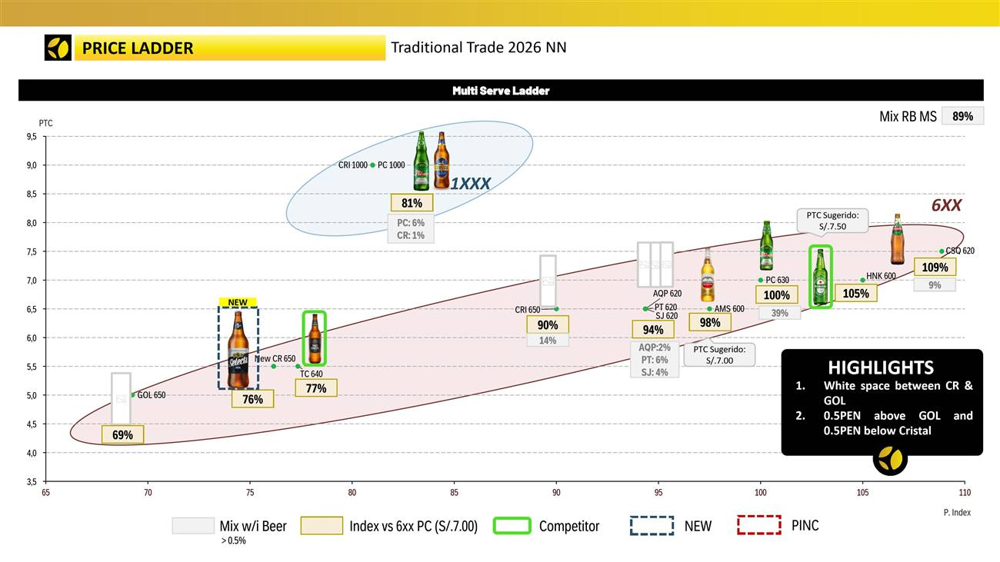
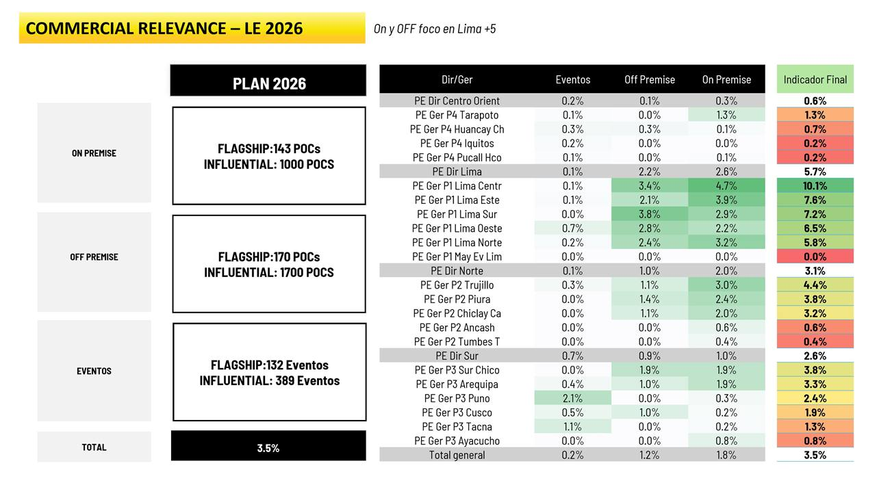
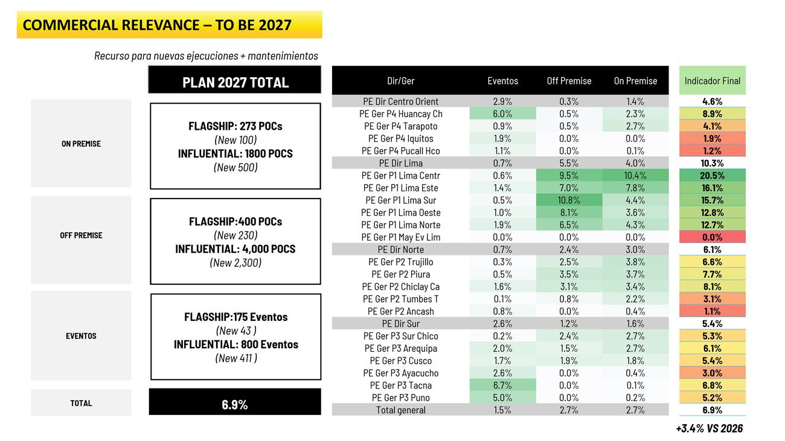
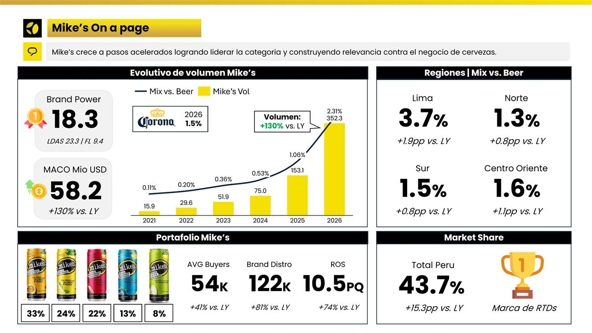
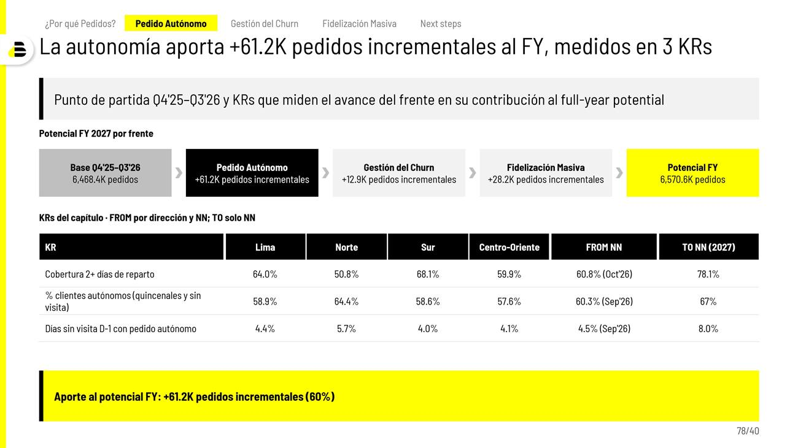
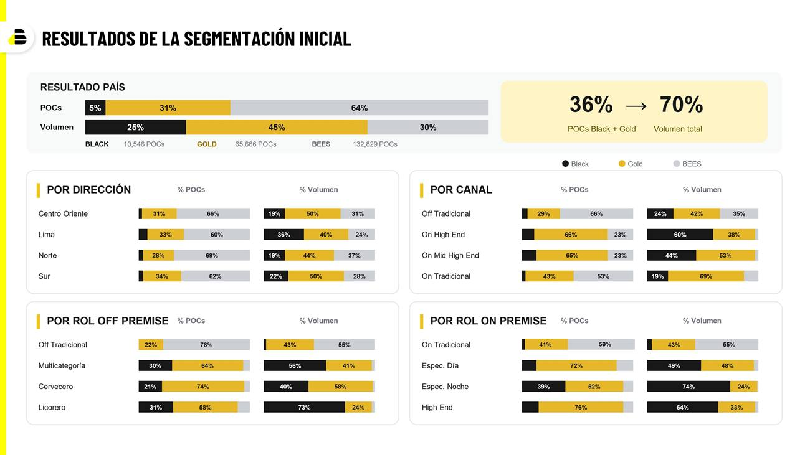

1YP 2027: lo que plantea el plan nacional y qué significa para Centro Oriente
Resumen ejecutivo
- El país crecerá con el core plano y apoyado en distribución nueva. Volumen +3% (15.6 → 16.1 MM HL), Brand Distribution +10%. El 80% del aumento de BD recae en brandpacks Hyper Focus (innovaciones y latas), que hoy son solo el 6% del volumen.
- Centro Oriente parte desde un portafolio distinto al que el plan prioriza. El 45% de nuestro volumen está en marcas Sustain o Tail (Cristal, San Juan, Golden), que no tienen campaña integrada (IMC) nacional; en el país ese peso es 31%. El segmento Hyper Focus pesa 2.9% en CO vs 6% nacional, aunque crece +155%.
- Selecta es la innovación que más toca a CO. Es una marca below core a ~S/5.50, pensada para el consumidor de bajos ingresos fuera de Lima. Su referencia de fair share en CO es ~30 mil HL, pero, según cuánto canibalice a Cristal, San Juan y Golden, el aporte neto va de +9 a +21 mil HL.
- El EPA (% de visitas que terminan en pedido) es la palanca con más volumen. En CO cada punto vale 0.3 mil HL al mes. Los 4 bloques del plan nacional (+26.8 pp) equivalen en teoría a ~96 mil HL al año; solo el bloque de supervisión en campo vale ~36 mil.
- Category Image es nuestro mayor rezago relativo. Commercial Relevance 0.6% (la menor del país) con meta 4.6% para 2027: entre 110 y 130 mil HL al año deberán pasar por puntos flagship e influential, casi 60% en Huancayo y mayormente vía eventos.
- En clientes, CO es la mejor en servicio y lealtad pero la última en autonomía de pedido. Ahí está la palanca de frecuencia que Growth valora en +0.70 HL por cliente-mes cuando un cliente pasa de 1 a 2 pedidos.
Las 5 preguntas que probablemente nos harán el 16-nov
| Pregunta | Respuesta que debemos llevar |
|---|---|
| ¿Cuánta Brand Distribution aporta CO y en qué brandpacks? | Portafolio por brandpack y canal, con movimientos de puntos hacia Mike's, CSQ 473 y Fresh. |
| ¿Qué hacemos con Cristal y San Juan, si no tienen IMC? | Plan propio: Cristal Iquitos (must-win) y San Juan Pucallpa (stronghold), con KSM locales. |
| ¿Cuánto Selecta vende CO y cuánto canibaliza? | Escenario de 30 mil HL con 30–70% de incrementalidad, por GV y CD. |
| ¿Cómo llegamos a 4.6% de Commercial Relevance? | Lista de eventos y PDVs por GV con PxQ, empezando por Huancayo. |
| ¿Cómo sube el EPA en CO? | Rutina de supervisores (40 h en campo) y gerentes (20 h), más pre-pedido en visitas cerradas. |
1El plan nacional: core plano, crecimiento por portafolio y distribución
El 2026 cierra como el año de mayor volumen de la historia de Backus: 15.6 MM HL (+8.2%), con Pilsen Callao explicando ~130% del crecimiento (+20% YTD). Fue posible porque, por primera vez en 4 años, se frenó el alza del costo relativo de la cerveza (minutos de trabajo necesarios para comprarla), moderando el precio del pack que pesa 40% del volumen. Para 2027 la ambición es +3% (16.1 MM HL), con precio acompañando a la inflación (Rate/CPI 114%).

Volumen y Brand Distribution 2027 por canal (Perú)
| Canal | Vol 26 | Vol 27 | Δ vol | Δ BD |
|---|---|---|---|---|
| Off premise | 5.44 | 5.49 | +0.8% | +8.7% |
| On premise | 1.26 | 1.28 | +1.6% | +11.1% |
| DAS (sell out) | 3.16 | 3.33 | +5.5% | +15.5% |
| Total | 9.85 | 10.10 | +2.4% | +10.4% |
Por segmento de foco (Perú)
| Segmento | Mix vol | Δ vol | Δ BD | % del Δ BD |
|---|---|---|---|---|
| Hyper Focus | 6% | +68% | +36% | 80% |
| Focus | 64% | +0.5% | +4.7% | 27% |
| Sustain | 30% | −0.8% | −3.5% | −6% |
| Tail | 1% | +1.6% | −11.2% | −1% |
Lectura. El volumen crece 2.4% y la distribución 10.4%: el plan supone que cada punto nuevo de distribución vende menos que el promedio, porque llega con innovaciones y latas que recién arrancan. En el canal Off premise, el 70% del crecimiento de BD se carga a los roles especializados (bodega cervecera, licorería, multicategoría), donde los SKUs distintos por POC deben pasar, por ejemplo, de 6.6 a 8 en el cervecero.
2Casi la mitad del volumen de CO está fuera de los motores del plan
La matriz nacional clasifica cada brandpack por foco (Hyper Focus = gran apuesta, mínimo +10%; Focus = potencial, +2.5%; Sustain = mantener o frenar pérdidas; Tail = declive aceptado) y por rol en la arquitectura del portafolio. Cristal, las marcas regionales y Golden 473 son Sustain; Golden 6XX y Budweiser son Tail. Ninguno es elegible para IMC en 2027, y en las 8 IMCs del año no aparece Cristal ni San Juan.

Centro Oriente por segmento de la matriz (YTD Ene–Oct, mil HL)
Por gerencia de venta: peso de las marcas Sustain/Tail y de los brandpacks Hyper Focus
3Selecta: la apuesta below core llega a nuestro consumidor
Selecta by Cristal es la innovación más grande del 2027 (160 mil HL) y el mayor aporte individual al crecimiento del país (+167 mil HL). Es una cerveza below core con líquido con beneficio de ISC, dirigida al hombre de +35 años y bajos ingresos (LIC), que genera más del 50% del volumen de la categoría. Ese consumidor está comprando menos por precio, y la brecha es mayor fuera de Lima: el tiempo de trabajo para comprar una cerveza es 24 minutos en Lima, 33 en Centro-Sur y 43 en Norte y Oriente. Mientras la participación crece en Lima, cae en las demás regiones.


4EPA: la mayor palanca de Growth depende de cómo se trabaja la visita
Hoy 43% de las visitas programadas termina en pedido del BDR (vendedor). En el resto, 22% de los clientes compra por su cuenta en otro momento (BEES u otro canal), 31% no compra en todo el ciclo y 4.6% de las visitas no se ejecuta. La meta 2027 es 70%; un CPG líder de referencia está en 73%. Growth muestra que la brecha no es la cartera:
- El 78% de la diferencia entre BDRs ocurre dentro de la misma gerencia. El mejor decil convierte 54% y el peor 26%, con la misma cartera y ~36 visitas al día.
- Con el supervisor en la venta, el EPA sube +10 pp (+11% HL y +12% SKUs por visita). Hoy solo el 1% de las visitas va acompañada, y el supervisor registra 9.6 h semanales en el mercado (meta: 40), con 15.5 h en tareas administrativas.
- El EPA cae los sábados (40.4% vs 44%) y en la tarde (~9 pp entre la mañana y las 16–18 h). Las visitas a clientes cerrados (8% del total) no tienen protocolo; convertirlas como las abiertas vale +3.6 pp.
- Si un cliente no compró en sus 2 últimos ciclos, 6 de cada 10 veces tampoco compra en este: es predecible antes de salir a ruta.

Lo que vale cada bloque del plan en Centro Oriente (referencia teórica)
5Category Image: CO es la última en Commercial Relevance
Category Image busca elevar la imagen de la cerveza con ejecuciones de alto impacto. Su KPI comercial, Commercial Relevance, mide qué porcentaje del volumen de cada gerencia pasa por puntos flagship (intervención completa) o influential (referentes de la zona). La evidencia de 2026 respalda la apuesta: en la licorería flagship El Botijón el volumen de cerveza se duplicó, la inversión se paga en 3.4 años, y los POCs con ejecución top crecieron +32% a +56% en volumen.


Volumen que debe pasar por puntos flagship e influential en CO
6Las marcas en CO frente al plan nacional
Cada marca tiene en el plan un rol y un nivel de inversión. Cruzarlos con nuestro desempeño por gerencia muestra dónde el plan nacional nos ayuda y dónde tenemos que complementarlo.
Variación YTD vs 2025 por gerencia de venta (mil HL)
| Marca | Rol 2027 | Lo que muestra CO y qué hacer |
|---|---|---|
| Cusqueña | Focus; 473 y Dorada Hyper Focus; IMCs Q1 y Q4 | Power en CO 20.6, mayor que Lima (19.5), pero la región con peor volumen (−10% YTD Set) y mix de 10%. Pucallpa e Iquitos en el bottom de GV por volumen de la marca. Es un tema de precio y disponibilidad: 473, Dorada y el kero en KSM locales. |
| Mike's | Hyper Focus; IMC Q4 | Mix sobre cerveza en CO 1.6% (+1.1 pp), el mayor salto del país. Es donde la expansión de portafolio sí funciona: mover puntos de BD hacia Mike's. |
| Cristal | Sustain; sin IMC | Quinto año de caída a nivel nacional (de 6.0 a 2.5 MM HL). Iquitos es el único must-win que crece. Su plan 2027 (Edición Campeona, Verano Amazónico) debe aterrizarse en Iquitos. |
| San Juan | Regionales; Sustain | Stronghold Pucallpa. Pedir toolkit, edición limitada y 12 semanas de medios del plan de regionales. |
| Corona | Focus; IMC Q2 | El menor crecimiento del país en CO; Coronita (precio de entrada S/3.5) pierde −26% de BD en CO. |




7Clientes: mejores en servicio y lealtad, últimos en autonomía
Growth gestionará el 2027 por número de pedidos: en un mismo cliente, pasar de 1 a 2 pedidos al mes suma +85% de HL (+0.70 HL y +S/352 de NR por cliente-mes). El plan busca +102 mil pedidos y +116 mil HL a nivel país, 60% vía pedido autónomo. El contexto es una base que se achica: los compradores nacionales caen −5.5% en un año (222.9 → 210.6 mil) por migración a mayoristas y cierre de bodegas (en Lima −33% de bodegas desde 2018).
| Indicador | CO | Nacional | Meta 27 | Lectura |
|---|---|---|---|---|
| % clientes que piden solos (quincenales y sin visita) | 57.6% | 60.3% | 67% | el menor del país |
| Cobertura 2+ días de reparto | 59.9% | 60.8% | 78.1% | |
| Días sin visita D-1 con pedido autónomo | 4.1% | 4.5% | 8.0% | |
| Cero Fallas | 57.1% | 55.2% | 58.7% | mejor que el país |
| Clientes con 2+ meses seguidos de falla | 21.9% | 23.6% | 19.5% | |
| Clientes perdidos que se recuperan (L12M) | 5.6% | 6.1% | 7.3% | el menor del país |
| Canjeadores de puntos (L3M) | 57.1% | 54.3% | 70% | el mejor del país |
| Tiempo desde el último canje | 3.0 meses | 3.7 meses | 2.5 meses | el mejor del país |
POCs compradores y productividad por gerencia (YTD Ene–Oct)


8Movimientos operativos que nos tocan directamente
Retenes (cobertura de rutas sin titular)
A nivel país solo se cubre el 61% de las rutas que necesitan retén, pese a que hay retenes suficientes: el 46% de su tiempo se va en "sombra" o sin registro, y están repartidos sin relación con la necesidad. La propuesta sube de 105 a 127 retenes y los reasigna por gerencia, con meta de ≥80% del tiempo cubriendo ruta.
| Gerencia | Rutas/día que necesitan retén | Retenes hoy | Retenes por ruta-día | Propuesta | Δ |
|---|---|---|---|---|---|
| Pucallpa–Huánuco | 1.4 | 7 | 5.0 | 2 | −5 |
| Huancayo–Chanchamayo | 1.9 | 5 | 2.6 | 3 | −2 |
| Iquitos | 1.2 | 3 | 2.5 | 2 | −1 |
| Tarapoto | 2.2 | 3 | 1.4 | 4 | +1 |
| Centro Oriente | 6.7 | 18 | 2.7 | 11 | −7 |
Coolers en primera posición (reto Q4 2026)
| Gerencia | Equipos asignados | Meta en primera posición | % de cumplimiento requerido |
|---|---|---|---|
| Huancay Ch | 530 | 371 | 70% |
| Tarapoto | 413 | 289 | 70% |
| Pucall Hco | 350 | 245 | 70% |
| Iquitos | 162 | 113 | 70% |
| Centro Oriente | 1,455 | 1,019 | 70% |
Growth asocia el frío en primera posición a +24% de apertura del equipo, y el Punto Perfecto completo (precio, lineal y frío) a +19% de volumen. A nivel país solo 4% de los POCs cumple hoy los tres a la vez.


9Lo que nos piden y lo que debemos llevar el 16 de noviembre

El plan nacional está construido desde Lima. Las flagships Off se ejecutan en "Lima +5", en High End solo aparece Tarapoto–Laguna Azul, y en la clusterización de gerencias Pucallpa, Tarapoto e Iquitos quedan en el clúster de menor prioridad (Huancayo, en el segundo). Por eso CO necesita llegar con oportunidades propias y cuantificadas.
Palancas para Centro Oriente: propias y del plan nacional
| Palanca | Potencial CO | Tipo |
|---|---|---|
| 5 palancas propias (DA Jun Puc, Cusqueña Huancayo, POCs DSD OFF, San Juan Iquitos, Golden) | +64.5 mil HL | recuperación de gaps 2026 |
| EPA: bloque liderazgo efectivo (+10 pp) | ~+36 mil HL | referencia teórica |
| Selecta (fair share, neto según incrementalidad) | +9 a +21 mil HL | escenario |
| Commercial Relevance 0.6% → 4.6% | 110–130 mil HL por puntos top | compromiso PxQ |
| Brand Distribution hacia Hyper Focus (Mike's, CSQ 473, Fresh) | por cuantificar | movimiento de puntos |
Decisiones y entregables
| Decisión o entregable | Con quién | Cuándo |
|---|---|---|
| Portafolio 2027 de CO por brandpack y canal, con movimientos de BD hacia Hyper Focus | Growth · Portafolio | 16-nov |
| Lista de flagships e influentials por GV con PxQ y calendario (prioridad Huancayo y eventos) | Category Image · GVs | 16-nov |
| Selecta en CO: volumen, plazas, precio y escenario de canibalización | Marketing · Revenue | Q4 2026 |
| Plan propio para Cristal Iquitos y San Juan Pucallpa (sin IMC nacional) | Marketing · Regional | Q4 2026 |
| Validar el ajuste de retenes (18 → 11) y la tabla de porte Black | Ventas · RRHH · Revenue | Dic 2026 |
| Rutina de líderes: supervisores 40 h con BDR, gerentes 20 h en mercado | Ventas | Ene 2027 |